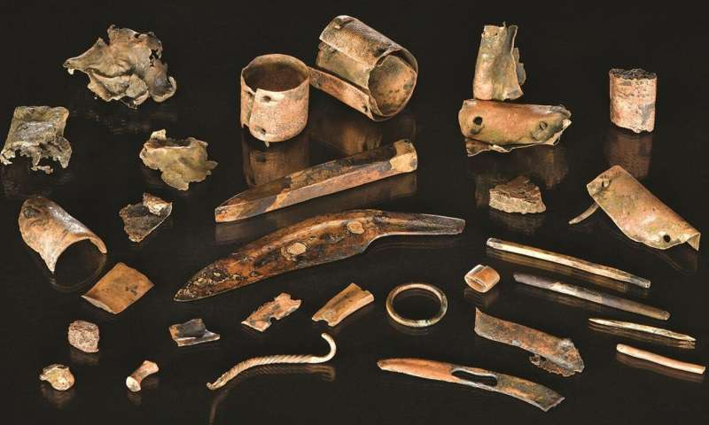
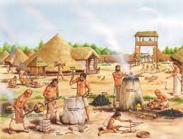
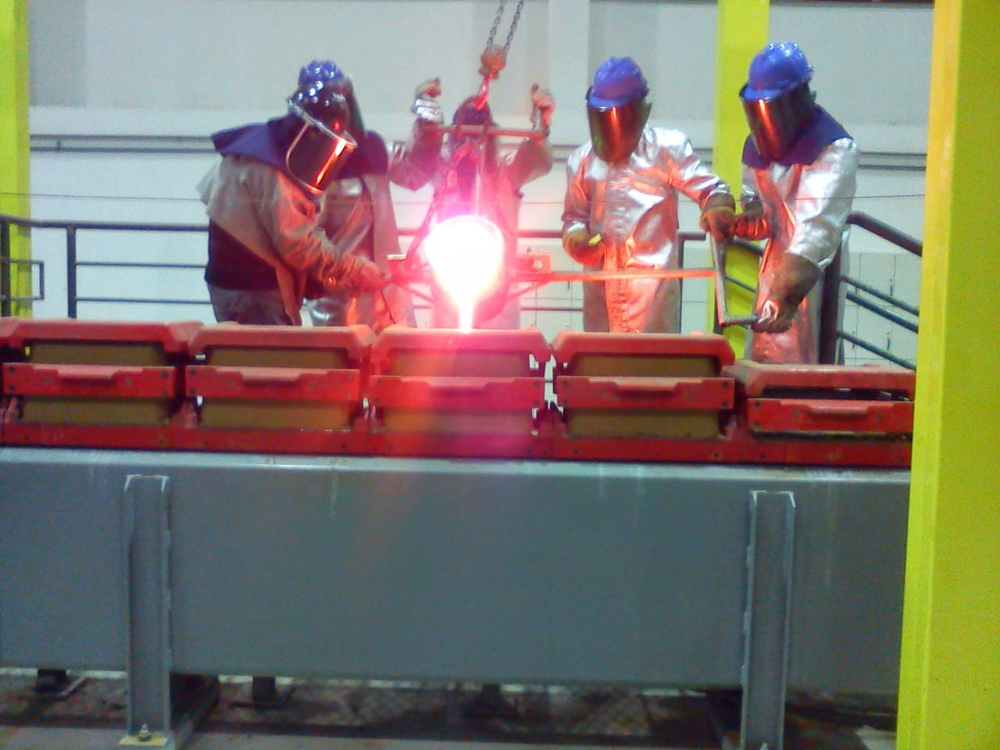
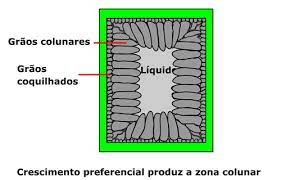
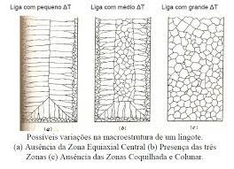

| |
A Alquimia da metalúrgia |
Desde or primórdios da humanidade desde a mesopotamia,o homem busca aperfeiçoar conhecimentos sobre a manipulação, dominio e forma de trabalhar o metal de diversas formas, com o objetivo da criação de armas, ferramentas e dispositivos que facilitasse o seu dia a dia ou lhe garantisse maior facilidade no seu dia a dia, ou vantagem sobre a sua presa ou caçador, com esse propósito e com o passar do tempo então o homem dominou diversas formas de trabalhar o metal, através da fundição, da forja, trefilação, laminação de metais, e tudo isso começou com o bronze, metal proveniente da liga de cobre e estanho. |
 |
As principais formas de trabalho no metal que lhe confere diferentes propriedades mecanicas são fundição, forja, extrusão e laminação, que podem ou não serem seguidos de um processo chamado de tratamento térmico de recozimento ou tempera |
|  |
Em cada um dos processos a estrutura atomica do metal é alterada sendo reformulada e rearranjada a cada processo de aquecimento e resfriamento, gerando propriedades unicas e caracteristicas de cada processo especifico.
Propiedades essa que podem ser boas ou ruins, tudo depende da aplicação seguinte que se deseja parao metal. Processo de fundição é chamado o processo que se aquece o metal até que o mesmo alcance o seu ponto de fusão, após o aquecimento o mesmo pode ser oxidado devido ao grande percentual de oxigenio do meio ou podemos mante-lo em sua composição quimica acrescentando carbono e impedindo que o mesmo continue o seu processo químico de oxidação por diferença de potencial, fazendo com que o carbono oxide no lugar do aço ou ferro fundido que esta sendo produzido, o mesmo processo e a mema ondição de oxidação se aplica a outrosmetais como ligas de cobre, aluminio e etc. |
 |
Após o processo de fundição o material é vazdo em um molde, o mesmo pode ter um resfriamento "controlado" ou não e o processo de resfriamento vai ser o responsavel pelas primeiras propriedades mecanicas que o material irá possuir, pois no processo de resfriamento acontece o primeiro proceso de rearranjo atomico chamado de resfrimento colunar o qual pode ser observado através de um processo nomeado de o qual voces terão a oportunidade de conhecer. |
|  |  |